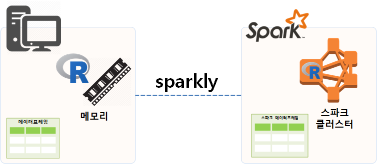
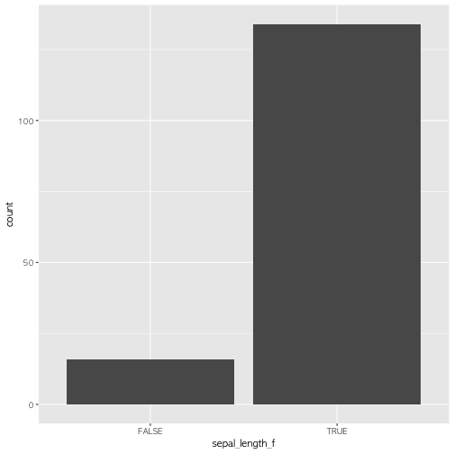
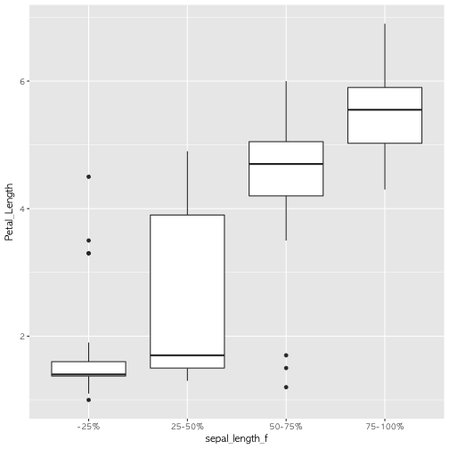
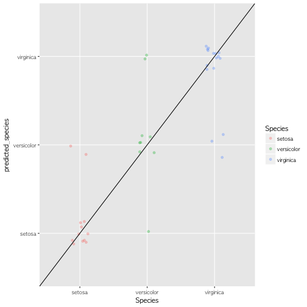

xwMOOC 기계학습
dplyr을 Spark 위에 올린 sparklyr
1. R과 스파크 1
R은 데이터분석 코드를 빠르고 가독성 좋게 작성하기 좋은 언어다. 마찬가지로 아파치 스파크(Apache Spark)은 엄청 큰 빅데이터를 빠르게 분석하기 좋도록 설계되었다. sparklyr은 스파크 클러스터에 dplyr R코드를 작성해서 돌릴 수 있는 팩키지다. 즉, dplyr 팩키지 다양한 기능을 스파크 데이터프레임에 적용하여 데이터 분석 작업을 수행할 수 있다는 의미가 된다.
R이 데이터분석에 최적화되어 있어 시각화나 데이터를 다루는데 뛰어난 성능과 기능을 자랑하지만 한가지 한계가 메모리(memory)를 넘어서는 데이터는 다루지 못하는 한계가 있다. 반면에 스파크는 오픈소스 클러스터 컴퓨팅 플랫폼이라 거의 무한대 크기의 데이터를 다룰 수 있다.
따라서, R과 스파크의 장점을 결합하고자 하는 노력이 있었고, 그 일환으로 sparklyr이 개발되어 빅데이터를 dplyr 사상에 따라 자유로이 분석할 수 있게 되었다. 빅데이터를 스파크 클러스터에 올려 dplyr 구문으로 분석할 수 있는 길이 열린 것이다.

2. 스파크 헬로우 월드
R에서 로컬 컴퓨터에 스파크를 설치하고 이를 운영하는 것은 간단하다. spark_install() 명령어로 설치하고 나서 spark_connect()를 통해 로컬 컴퓨터에 구축된 스파크 클러스트에 연결한다. spark_version()을 확인하고 나서, spark_disconnect() 명령어로 스파크 클러스트 연결을 종료한다.
# 1. 설치
install.packages("sparklyr")
library(sparklyr)
spark_install()
# 2. 스파크 클러스터 연결
sc <-spark_connect(master="local")
## 2.1. 스파크 버젼 확인
spark_version(sc=sc)
# 3. 스파크 연결해제
spark_disconnect(sc=sc)3. csv 파일 불러오기
스파크 클러스터가 완료되면 가장 먼저 해야 할 일은 스파크 클러스터에서 분석할 데이터를 불러오는 것이다. .csv 파일을 R로 read_csv() 함수로 불러오는 것과 마찬가지로 spark_read_csv() 함수를 통해 직접 불러오거나, 이미 데이터프레임으로 R에서 분석가능한 형태로 존재하게 되면 copy_to() 명령어를 통해 스파크에 전달한다.
iris 데이터프레임을 스파크 클러스터로 전달하는 명령어는 copy_to(sc, iris)으로 스파크 클러스트(sc)에 iris를 복사해 보낸다. src_tbls

glimpse(iris)Observations: 150
Variables: 5
$ Sepal.Length <dbl> 5.1, 4.9, 4.7, 4.6, 5.0, 5.4, 4.6, 5.0, 4.4, 4.9,...
$ Sepal.Width <dbl> 3.5, 3.0, 3.2, 3.1, 3.6, 3.9, 3.4, 3.4, 2.9, 3.1,...
$ Petal.Length <dbl> 1.4, 1.4, 1.3, 1.5, 1.4, 1.7, 1.4, 1.5, 1.4, 1.5,...
$ Petal.Width <dbl> 0.2, 0.2, 0.2, 0.2, 0.2, 0.4, 0.3, 0.2, 0.2, 0.1,...
$ Species <fctr> setosa, setosa, setosa, setosa, setosa, setosa, ...
# Sys.setenv(SPARK_HOME="C:/spark-1.6.2-bin-hadoop2.6")
sc <-spark_connect(master="local")
iris_tbl <- copy_to(sc, iris)
src_tbls(sc)[1] "iris"
3.1. 빅데이터와 tibble() 자료구조
copy_to() 명령어를 통해 반환되는 객체는 tibble()이다. 티블은 data.frame 객체를 내부에 갖고 있을 수도 있고, 원격 객체 (데이터베이스 등)를 갖을 수 있고 다양한 출력명령어를 지원한다. 따라서, 티블(tibble)로 데이터를 반환받게 되면 크기는 매우 작고 다양한 출력기능을 활용할 수 있고, 실제 데이터는 스파크 클러스터에 존재한다.

# iris_tbl 티블 객체에 `iris` 스파크 데이터프레임을 `tbl()` 명령어로 연결
iris_tbl <- tbl(sc, "iris")
dim(iris_tbl)[1] 150 5
pryr::object_size(iris_tbl)9.89 kB
# 출력
print(iris_tbl, n=6, width = Inf)Source: query [150 x 5]
Database: spark connection master=local[8] app=sparklyr local=TRUE
# A tibble: 150 x 5
Sepal_Length Sepal_Width Petal_Length Petal_Width Species
<dbl> <dbl> <dbl> <dbl> <chr>
1 5.1 3.5 1.4 0.2 setosa
2 4.9 3.0 1.4 0.2 setosa
3 4.7 3.2 1.3 0.2 setosa
4 4.6 3.1 1.5 0.2 setosa
5 5.0 3.6 1.4 0.2 setosa
6 5.4 3.9 1.7 0.4 setosa
# ... with 144 more rows
# 스파크 데이터프레임 자료구조 확인
glimpse(iris_tbl)Observations: 150
Variables: 5
Error in if (width[i] <= max_width[i]) next: TRUE/FALSE가 필요한 곳에 값이 없습니다
pryr::object_size 명령어를 통해 크기를 확인할 수 있다.
4. dplyr 데이터 처리
4.1. dplyr 기본
스파크 데이터프레임을 sparklyr 팩키지를 통해 tibble() 자료형으로 연결시키고 나면 dplyr 명령어를 다수 활용할 수 있다. 가장 기본적인 dplyr 명령어는 다음과 같다.
- select: 변수 선택
- filter: 관측점 선택
- arrange: 정렬
- mutate: 변수 생성
- summarize: 총합/요약
copy_to(sc, iris, overwrite = TRUE)Source: query [150 x 5]
Database: spark connection master=local[8] app=sparklyr local=TRUE
# A tibble: 150 x 5
Sepal_Length Sepal_Width Petal_Length Petal_Width Species
<dbl> <dbl> <dbl> <dbl> <chr>
1 5.1 3.5 1.4 0.2 setosa
2 4.9 3.0 1.4 0.2 setosa
3 4.7 3.2 1.3 0.2 setosa
4 4.6 3.1 1.5 0.2 setosa
5 5.0 3.6 1.4 0.2 setosa
6 5.4 3.9 1.7 0.4 setosa
7 4.6 3.4 1.4 0.3 setosa
8 5.0 3.4 1.5 0.2 setosa
9 4.4 2.9 1.4 0.2 setosa
10 4.9 3.1 1.5 0.1 setosa
# ... with 140 more rows
iris_sdf_tbl <- tbl(sc, "iris")
glimpse(iris_sdf_tbl)Observations: 150
Variables: 5
Error in if (width[i] <= max_width[i]) next: TRUE/FALSE가 필요한 곳에 값이 없습니다
# 2. 기본 데이터 처리 ------------------------------------------
## 2.1. select
iris_sdf_tbl %>% dplyr::select(Sepal_Length, Petal_Length, Species)Source: query [150 x 3]
Database: spark connection master=local[8] app=sparklyr local=TRUE
# A tibble: 150 x 3
Sepal_Length Petal_Length Species
<dbl> <dbl> <chr>
1 5.1 1.4 setosa
2 4.9 1.4 setosa
3 4.7 1.3 setosa
4 4.6 1.5 setosa
5 5.0 1.4 setosa
6 5.4 1.7 setosa
7 4.6 1.4 setosa
8 5.0 1.5 setosa
9 4.4 1.4 setosa
10 4.9 1.5 setosa
# ... with 140 more rows
## 2.2. filter
iris_sdf_tbl %>% dplyr::select(Sepal_Length, Petal_Length, Species) %>%
dplyr::filter(Sepal_Length > 5.0, Petal_Length > 5)Source: query [42 x 3]
Database: spark connection master=local[8] app=sparklyr local=TRUE
# A tibble: 42 x 3
Sepal_Length Petal_Length Species
<dbl> <dbl> <chr>
1 6.0 5.1 versicolor
2 6.3 6.0 virginica
3 5.8 5.1 virginica
4 7.1 5.9 virginica
5 6.3 5.6 virginica
6 6.5 5.8 virginica
7 7.6 6.6 virginica
8 7.3 6.3 virginica
9 6.7 5.8 virginica
10 7.2 6.1 virginica
# ... with 32 more rows
## 2.3. arrange
iris_sdf_tbl %>% dplyr::select(Sepal_Length, Petal_Length, Species) %>%
dplyr::filter(Sepal_Length > 5.0, Petal_Length > 5) %>%
arrange(Species, desc(Petal_Length), Sepal_Length)Source: query [42 x 3]
Database: spark connection master=local[8] app=sparklyr local=TRUE
# A tibble: 42 x 3
Sepal_Length Petal_Length Species
<dbl> <dbl> <chr>
1 6.0 5.1 versicolor
2 7.7 6.9 virginica
3 7.7 6.7 virginica
4 7.7 6.7 virginica
5 7.6 6.6 virginica
6 7.9 6.4 virginica
7 7.3 6.3 virginica
8 7.2 6.1 virginica
9 7.4 6.1 virginica
10 7.7 6.1 virginica
# ... with 32 more rows
## 2.4. mutate
iris_sdf_tbl %>% dplyr::select(Sepal_Length, Petal_Length, Species) %>%
dplyr::filter(Sepal_Length > 5.0, Petal_Length > 5) %>%
arrange(Species, desc(Petal_Length), Sepal_Length) %>%
mutate(log_Sepal_Length = log(Sepal_Length))Source: query [42 x 4]
Database: spark connection master=local[8] app=sparklyr local=TRUE
# A tibble: 42 x 4
Sepal_Length Petal_Length Species log_Sepal_Length
<dbl> <dbl> <chr> <dbl>
1 6.0 5.1 versicolor 0.5581106
2 7.7 6.9 virginica 0.4899030
3 7.7 6.7 virginica 0.4899030
4 7.7 6.7 virginica 0.4899030
5 7.6 6.6 virginica 0.4930606
6 7.9 6.4 virginica 0.4838251
7 7.3 6.3 virginica 0.5030499
8 7.2 6.1 virginica 0.5065648
9 7.4 6.1 virginica 0.4996303
10 7.7 6.1 virginica 0.4899030
# ... with 32 more rows
## 2.5. summarize
iris_sdf_tbl %>% dplyr::select(Sepal_Length, Petal_Length, Species) %>%
dplyr::filter(Sepal_Length > 5.0, Petal_Length > 5) %>%
arrange(Species, desc(Petal_Length), Sepal_Length) %>%
mutate(log_Sepal_Length = log(Sepal_Length)) %>%
dplyr::summarise(mean_sepal_length = mean(Sepal_Length),
max_petal_legnth = max(Petal_Length))Source: query [1 x 2]
Database: spark connection master=local[8] app=sparklyr local=TRUE
# A tibble: 1 x 2
mean_sepal_length max_petal_legnth
<dbl> <dbl>
1 6.721429 6.9
4.2. dplyr 고급 기능
변수를 선택할 때 starts_with, ends_with, contain 등을 활용할 수 있고, distinct도 변수내 포함된 범주를 식별할 때 도움이 많이 된다. 특히, 범주형 변수의 경우 count 함수에 정렬 sort=TRUE를 넣고 top_n 을 통해 상위 출현빈도가 많은 범주를 찾아내는 것도 많이 활용되는 패턴이다.
group_by 함수를 함께 넣어 집단별로 요약통계량을 계산하는 것도 가능히다.
dplyr에서 데이터를 다루는 R 코드를 작성하면 내부적으로 이를 SQL 문으로 변환시켜 스파크 클러스터에 전달시킨다. 따라서, spark_connect에서 정의한 SPARK Context를 인자로 넣고 SQL 문장을 넣으면 R 코드로 작성한 동일한 결과를 얻게 된다. dplyr R 코드가 SQL 코드로 변환한 것을 확인하고자 할 경우, 혹은 R을 모르는 다른 개발자와 SQL로 의사소통을 하고자 할 때, explain 명령어를 통해 SQL 코드를 얻을 수 있다.
# 3. 고급 데이터 처리 ------------------------------------------
## 3.1. select
iris_sdf_tbl %>% dplyr::select(starts_with("Sepal"), Species)Source: query [150 x 3]
Database: spark connection master=local[8] app=sparklyr local=TRUE
# A tibble: 150 x 3
Sepal_Length Sepal_Width Species
<dbl> <dbl> <chr>
1 5.1 3.5 setosa
2 4.9 3.0 setosa
3 4.7 3.2 setosa
4 4.6 3.1 setosa
5 5.0 3.6 setosa
6 5.4 3.9 setosa
7 4.6 3.4 setosa
8 5.0 3.4 setosa
9 4.4 2.9 setosa
10 4.9 3.1 setosa
# ... with 140 more rows
## 3.2. filter
iris_sdf_tbl %>% distinct(Species)Source: query [3 x 1]
Database: spark connection master=local[8] app=sparklyr local=TRUE
# A tibble: 3 x 1
Species
<chr>
1 virginica
2 versicolor
3 setosa
## 3.3. 계수(count)
iris_sdf_tbl %>% dplyr::count(Species, sort=TRUE) %>%
dplyr::top_n(3) %>%
explain() #버그 https://github.com/rstudio/sparklyr/issues/645
## 3.4. group_by
iris_sdf_tbl %>% dplyr::select(Sepal_Length, Petal_Length, Species) %>%
dplyr::filter(Sepal_Length > 1.0, Petal_Length > 1.5) %>%
mutate(log_Sepal_Length = log(Sepal_Length)) %>%
group_by(Species) %>%
dplyr::summarise(mean_sepal_length = mean(Sepal_Length),
max_petal_legnth = max(Petal_Length)) %>%
arrange(mean_sepal_length)Source: query [3 x 3]
Database: spark connection master=local[8] app=sparklyr local=TRUE
# A tibble: 3 x 3
Species mean_sepal_length max_petal_legnth
<chr> <dbl> <dbl>
1 setosa 5.069231 1.9
2 versicolor 5.936000 5.1
3 virginica 6.588000 6.9
## 3.5. SQL
iris_sdf_tbl %>% dplyr::select(Sepal_Length, Petal_Length, Species) %>%
dplyr::filter(Sepal_Length > 1.0, Petal_Length > 1.5) %>%
mutate(log_Sepal_Length = log(Sepal_Length)) %>%
group_by(Species) %>%
dplyr::summarise(mean_sepal_length = mean(Sepal_Length),
max_petal_legnth = max(Petal_Length)) %>%
arrange(mean_sepal_length) %>%
explain()
DBI::dbGetQuery(sc,
"SELECT `Species`, AVG(`Sepal_Length`) AS `mean_sepal_length`, MAX(`Petal_Length`) AS `max_petal_legnth`
FROM (SELECT `Sepal_Length`, `Petal_Length`, `Species`, ln(`Sepal_Length`) AS `log_Sepal_Length`
FROM (SELECT *
FROM (SELECT `Sepal_Length` AS `Sepal_Length`, `Petal_Length` AS `Petal_Length`, `Species` AS `Species`
FROM `iris`) `rvbmbsphdh`
WHERE ((`Sepal_Length` > 1.0) AND (`Petal_Length` > 1.5))) `stgslkujqx`) `uwmrkgahqh`
GROUP BY `Species`
ORDER BY `mean_sepal_length`") Species mean_sepal_length max_petal_legnth
1 setosa 5.069231 1.9
2 versicolor 5.936000 5.1
3 virginica 6.588000 6.9
5. 데이터프레임 변환과 중간결과 저장
영구저장소에 저장된 .csv 파일을 메모리로 불러올릴 때 read_csv 함수를 사용해서 R 데이터 프레임으로 변환시킨다. 마찬가지로 R 데이터프레임을 스파크 클러스터 데이터프레임으로 보낼 때 copy_to 함수를 사용해서 복사를 한다.
이제 반대로 스파크 클러스터에 있는 스파크 데이터프레임을 R 데이터프레임으로 변환시키는 작업이 필요한데 이런 경우 collect() 함수를 활용하여 스파크 데이터프레임을 R 데이터프레임으로 변환시키게 된다.
dplyr 툴체인을 사용하게 되면 파이프 연산이 길어질 경우 중간에 “뻑(?)”이 나거나 다운되는 경우도 흔하다. 이런 경우 중간 결과를 저장하기 위해서 compute 명령어에 인자값으로 스파크 데이터프레임 이름을 붙이게 되면 안정적인 후속작업도 가능하다.
# 1. 데이터프레임 변환 -----------------------------------------------
iris_df <- iris_sdf_tbl %>%
dplyr::select(starts_with("Sepal"), Species) %>%
collect()
class(iris_df)[1] "tbl_df" "tbl" "data.frame"
# 2. 중간결과 저장 -----------------------------------------------
iris_sepal <- iris_sdf_tbl %>%
dplyr::select(starts_with("Sepal"), Species) %>%
compute("iris_sepal")
src_tbls(sc)[1] "iris" "iris_sepal"
class(iris_sepal)[1] "tbl_spark" "tbl_sql" "tbl_lazy" "tbl"
6. 기계학습 사전 준비
6.1. 스파크, R 스키마 비교
스파크는 엄격한 자료형을 갖고 있고 동시에 통계학이나 데이터분석에서 많이 활용되는 요인(factor)에 대한 개념이 없기 때문에 이를 별도로 구현해야 하고 데이터분석 과정에 반영을 시켜야 된다.
| R 자료형 (한글) | R 자료형 | 스파크 자료형 |
|---|---|---|
| 논리형 | logical | BooleanType |
| 숫자형 | numeric | DoubleType |
| 정수형 | integer | IntegerType |
| 문자형 | character | StringType |
| 리스트 | list | ArrayType |
6.2. 스파크에서 제공하는 기능(함수)
dplyr에서 제공되는 함수 외에 함수명 시작이 ft_, sdf_, ml_로 시작되는 함수들이 있다.
sdf_: 스파크에서 지원하는 함수ft_: 변수 변환(feature transformation)으로 예측모형의 전처리로 사용되는 함수ml_: 기계학습 기능을 지원하는 함수
연속형 변수를 이산화하여 범주형 변수로 만들 경우 ft_binarizer 함수나 ft_bucketizer 함수를 활용한다. ft_bucketizer 함수는 R환경에서 cut() + quantile() 함수를 조합한 기능을 한방에 지원한다.
# 1. 스파크 데이터프레임 스키마
(iris_schema <- sdf_schema(iris_sdf_tbl))$Sepal_Length
$Sepal_Length$name
[1] "Sepal_Length"
$Sepal_Length$type
[1] "DoubleType"
$Sepal_Width
$Sepal_Width$name
[1] "Sepal_Width"
$Sepal_Width$type
[1] "DoubleType"
$Petal_Length
$Petal_Length$name
[1] "Petal_Length"
$Petal_Length$type
[1] "DoubleType"
$Petal_Width
$Petal_Width$name
[1] "Petal_Width"
$Petal_Width$type
[1] "DoubleType"
$Species
$Species$name
[1] "Species"
$Species$type
[1] "StringType"
iris_schema %>%
lapply(function(x) do.call(data.frame, x)) %>%
bind_rows() name type
1 Sepal_Length DoubleType
2 Sepal_Width DoubleType
3 Petal_Length DoubleType
4 Petal_Width DoubleType
5 Species StringType
# 2. 스파크 요인(Factor) -----------------------------------------------
## 2.1. 요인(factor) 변환
iris_sdf_df <- iris_sdf_tbl %>%
dplyr::select(Sepal_Length) %>%
ft_binarizer("Sepal_Length", "sepal_length_f", 4.8) %>%
collect() %>%
mutate(sepal_length_f = as.logical(sepal_length_f))
ggplot(iris_sdf_df, aes(sepal_length_f)) +
geom_bar()
## 2.2. 연속형 변수를 범주형 변환 (I)
sepal_split <- quantile(iris$Sepal.Length, c(0, 0.25, 0.5, 0.75, 1))
sepal_split_labels <- c("-25%", "25-50%", "50-75%", "75-100%")
iris_sdf_df <- iris_sdf_tbl %>%
dplyr::select(Sepal_Length, Petal_Length) %>%
mutate(Sepal_Length = as.numeric(Sepal_Length)) %>%
ft_bucketizer("Sepal_Length", "sepal_length_f", splits = sepal_split) %>%
collect() %>%
mutate(sepal_length_f = factor(sepal_length_f, labels=sepal_split_labels))
ggplot(iris_sdf_df, aes(sepal_length_f, Petal_Length)) +
geom_boxplot()
## 2.2. 연속형 변수를 범주형 변환 (II)
iris_sdf_tbl %>%
dplyr::select(Sepal_Length, Petal_Length) %>%
mutate(Sepal_Length = as.numeric(Sepal_Length)) %>%
ft_quantile_discretizer("Sepal_Length", "sepal_length_f", n.buckets = 4) %>%
collect() %>%
mutate(sepal_length_f = factor(sepal_length_f, labels=sepal_split_labels)) %>%
ggplot(aes(sepal_length_f, Petal_Length)) +
geom_boxplot()
6.3. 기계학습 예측 모형
기계학습을 위한 모형이 준비되었다면 다음 단계로 스파크 빅데이터에서 sdf_sample 함수를 사용하여 표본을 추출(10%)하여 탐색적 데이터분석(EDA)을 진행하는 것도 권장된다.
예측모형을 개발하고자 하는 경우 sdf_partition 함수를 통해 훈련데이터와 검증 데이터로 나눠서 훈련데이터를 예측모형(Random Forest) ml_random_forest 함수에 넣어 예측모형을 개발하고 나서, 검증 데이터로 예측모형의 성능을 점검한다.
# 1. 기계학습 -----------------------------------------------
## 1.1. 표본추출 --------------------------------------------
iris_sdf_tbl %>%
sdf_sample(fraction = 0.1, replacement=FALSE) %>%
compute("iris_10_pcnt")Source: query [10 x 5]
Database: spark connection master=local[8] app=sparklyr local=TRUE
# A tibble: 10 x 5
Sepal_Length Sepal_Width Petal_Length Petal_Width Species
<dbl> <dbl> <dbl> <dbl> <chr>
1 4.4 2.9 1.4 0.2 setosa
2 5.7 4.4 1.5 0.4 setosa
3 5.4 3.9 1.3 0.4 setosa
4 5.0 3.2 1.2 0.2 setosa
5 5.9 3.0 4.2 1.5 versicolor
6 6.4 3.2 5.3 2.3 virginica
7 6.9 3.2 5.7 2.3 virginica
8 5.6 2.8 4.9 2.0 virginica
9 7.2 3.2 6.0 1.8 virginica
10 7.4 2.8 6.1 1.9 virginica
src_tbls(sc)[1] "iris" "iris_10_pcnt" "iris_sepal"
iris_10_pcnt_tbl <- tbl(sc, "iris_10_pcnt")
glimpse(iris_10_pcnt_tbl)Observations: 10
Variables: 5
Error in if (width[i] <= max_width[i]) next: TRUE/FALSE가 필요한 곳에 값이 없습니다
## 1.2. 훈련/테스트 데이터셋 -------------------------------
iris_split_tbl <- iris_sdf_tbl %>%
sdf_partition(training = 0.7, testing = 0.3)
iris_split_tbl$training %>% countSource: query [1 x 1]
Database: spark connection master=local[8] app=sparklyr local=TRUE
# A tibble: 1 x 1
n
<dbl>
1 113
iris_split_tbl$testing %>% countSource: query [1 x 1]
Database: spark connection master=local[8] app=sparklyr local=TRUE
# A tibble: 1 x 1
n
<dbl>
1 37
## 1.3. 모형적합 --------------------------------------------
feature_columns <- iris_split_tbl$training %>%
colnames(iris_split_tbl$training) %>%
stringr::str_subset("[^Species]")
iris_rf <- iris_split_tbl$training %>%
ml_random_forest("Species", feature_columns)
iris_responses <- iris_split_tbl$testing %>%
select(Species) %>%
collect() %>%
mutate(
predicted_species = predict(
iris_rf,
iris_split_tbl$testing
)
)
table(iris_responses) predicted_species
Species setosa versicolor virginica
setosa 10 2 0
versicolor 1 6 2
virginica 0 3 13
ggplot(iris_responses, aes(Species, predicted_species)) +
geom_jitter(width = 0.15, height=0.15, aes(colour = Species), alpha=0.3) +
geom_abline(intercept=0, slope=1)